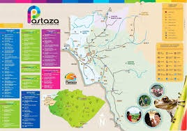

La geografía de Puyo está caracterizada por su posición central en la Región Amazónica del Ecuador. La ciudad se encuentra situada en los flancos externos de la cordillera oriental de los Andes, al occidente de la provincia de Pastaza; aproximadamente a una hora de Baños por una carretera de muy buena calidad. Se encuentra a 940 m sobre el nivel del mar, a una latitud de 0°59′ -1" Sur y a una longitud de 77°49′0″ O.
sPuyo es una ciudad pequeña que en los últimos años ha aumentado notablemente su oferta turística con especial énfasis en las actividades ecológicas y de aventura. Tiene una gran riqueza hidrológica a sus alrededores,
además el río Puyo corre al este de la ciudad y el río Pambay cruza los barrios del norte, desembocando en el río Puyo a la altura del mirador del paseo turístico. El río Pindo llega del oeste y recorre algunos barrios, dirigiendo su curso a la parroquia Tarqui.
 costrumnbre
galeria
sitioturistico
home
costrumnbre
galeria
sitioturistico
home